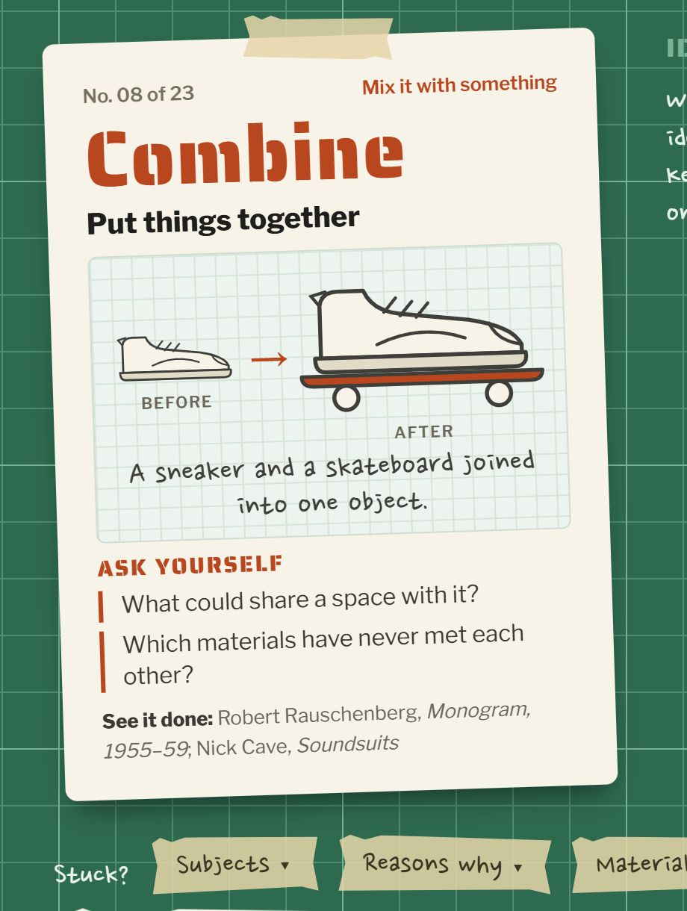
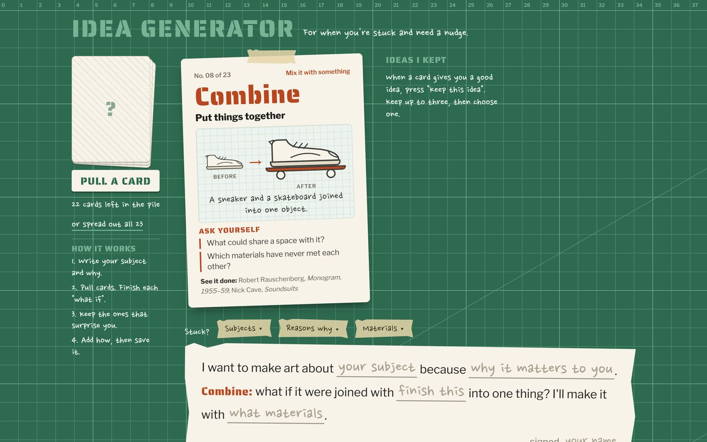

Idea
Generator
For when you're stuck at the start of a project.
Pull a card from a pile of 23 ways to change an idea, such as subtract, repeat or hybridize. Each card draws a sneaker before and after, asks two questions and names artists who did it. Fill in one sentence, keep up to three ideas and save the best as a picture.